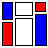
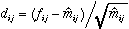
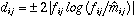
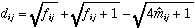
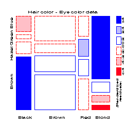
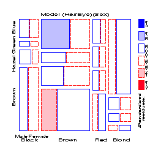
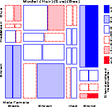

User's Guide for MOSAICSThere is also:
This report describes MOSAICS, a collection of SAS/IML programs and macros for producing mosaic displays. The programs has the following features:
*-- Change the path in the following filename statement to point to
the installed location of mosaics.sas;
filename mosaics '~/sasuser/mosaics/';
*--- Change the path in the libname to point to where the compiled
modules will be stored, ordinarily the same directory;
libname mosaic '~/sasuser/mosaics/';
On Windows,
filename mosaics 'c:\sasuser\mosaics\'; libname mosaic 'c:\sasuser\mosaics\';
sas mosaicm
These steps need only be done once.
In applications, the modules are loaded into the SAS/IML workspace with the load or %include statement, as follows,
libname mosaic '~/sasuser/mosaics'; proc iml; reset storage=mosaic.mosaic; load module=_all_;On most platforms, a libname statement is needed to specify the location of the MOSAIC library in the operating system file structure. Note: This requires that you have Read/Write access to the MOSAIC library, even if the MOSAIC modules are only loaded. See "Public Use" below for a solution.
Alternatively, it is possible to store and use the program in source form. This avoids the need to maintain and access the SAS/IML catalog, but means that the program is compiled each time it is run. To use the program in this way, simply access the program with a %include statement:
filename mosaics 'path/to/mosaics.sas'; proc iml; %include mosaics;On some platforms you may need to add a path specification to the %include statement or use a filename statement to specify the location of the MOSAICS.SAS file in the operating system file structure.
libname mosaic '~/sasuser/mosaics' access=readonly;You can place this statement in the system-wide autoexec.sas file.
Alternatively, copy the MOSAICS.SAS file to any public (readable) directory, and instruct users to load them using the %include statement, as described above.
If you are using IML, the contingency table can either be defined directly with IML statements, or input from a SAS data set. The macro reads data from a SAS data set.
proc iml symsize=256;
reset storage=mosaic.mosaic;
load module=_all_;
*-- specify data parameters;
levels = { ... }; *-- variable levels;
table = { ... }; *-- contingency table;
vnames = { ... }; *-- variable names;
...
*-- specify non-default global inputs;
fittype='USER';
config = { 1 1,
2 3 };
run mosaic(levels, table, vnames, lnames, plots, title);
The n-way contingency table to be analyzed is specified by the table parameter; the names of the dimension (factor) variables and the names of the values that the dimension variables take on are specified in the vnames and lnames parameters, respectively, as described below.
In situations where the contingency table and factor variables are available in a SAS dataset, the table, levels, and lnames matrices may be constructed with the readtab module, described in Dataset Input. The parameters for the run mosaic statement are:
In addition table must conform to levels as follows. If table is I rows by J columns, the product of all entries in levels must be IJ. Moreover, J must equal the product of the first k entries of levels, for some k. That is, the columns must correspond to the combinations of one or more of the first k factors.
Moreover, if the title for a given plot contains the string &MODEL (upper case), that string is replaced by the symbolic model description. Similarly, the string &G2 (or &X2) is replaced by the LR (Pearson) chisquare value and df for the current model, in the form 'G2 (df) = value'. Enclose such titles in single quotes, otherwise the SAS macro processor will complain about an 'Apparent symbolic reference'. For example, the specifications,
plots = 2:3;
fittype='JOINT';
title = { '',
'Hair-color Eye-color Data Model (H)(E)',
'Hair-color Eye-color Data Model (HE)(S)'};
produces two plots with titles from title[2]
and title[3].(1). Equivalent
results (using substitution) are produced with the single
title,
title = 'Hair-color Eye-color Data Model &MODEL';
config = { 1 1 2,
2 3 3};
or
config = { A A B,
B C C};
The same model can be specified more easily row-wise, and then transposed:
config = t( {1 2, 1 3, 2 3} );

where m hat ij is the estimated expected frequency under the model.

Optionally, the keyword JOINT may be followed by a digit, k, to specify which of the n ordered variables is independent of the rest jointly.
Optionally, the keyword CONDIT may be followed by a digit, k, to specify which of the n ordered variables is conditioned upon.
MARKOV (or MARKOV1) fits the models [A][B], [AB] [BC], [AB] [BC] [CD], ..., where the categories at each lag are associated only with those at the previous lag. MARKOV2 fits the models [A][B], [A] [B] [C], [ABC] [BCD], [ABC] [BCD] [CDE], ....
order = {JOINT COL};
At present this analysis merely produces printed output which suggests an ordering, but does not actually reorder the table or the mosaic display.
0 0 <= | d ij | < 2 1 2 <= | d ij | < 4 2 4 <= | d ij |Standardized deviations are often referred to a standard Gaussian distribution; under the assumption that the model fits, these values roughly correspond to two-tailed probabilities p < .05 and p < .0001 that a given value of | d ij | exceeds 2 or 4, respectively. Use shade= a big number to suppress all shading.
Zero entries cause the corresponding cell frequency to be fitted exactly; one degree of freedom is subtracted for each such zero. The corresponding tile in the mosaic display is outlined in black.
If an entry in any marginal subtable in the order [A], [AB], [ABC] ... corresponds to an all-zero margin, that cell is treated similarly as a structural zero in the model for the corresponding subtable. Note, however, that tables with zero margins may not always have estimable models.
If the table contains zero frequencies which should be treated as structural zeros, assign the zeros matrix like this:
zeros = table > 0;
For a square table, to fit a model of quasi-independence ignoring the diagonal entries, assign the zeros matrix like this (assuming a 4 x 4 table):
zeros = J(4,4) - I(4);
There is one caveat imposed by this use of global variables: The mosaic module should not be called from an IML module with its own arguments, since this would cause all variables defined within that module to inaccessible as global variables. The mosaic module may be called either in immediate mode, as in the examples in the next section, or from an IML module defined without arguments.
goptions hsize=7 in vsize=7 in;
The program uses the colors blue and red to draw the tiles corresponding to positive and negative residuals. You can specify the IML global colors variable to change these assignments if you wish. (Or, change the default values in the globals module.)
The program cannot access global fonts assigned with the GOPTION FTEXT= and HTEXT= options. Instead, you may specify a desired font with the IML global font and htext variables. For some output devices (e.g., PostScript), specifying a hardware font (e.g., font = 'hwpsl009'; for Helvetica) can yield an enormous reduction in the size of the generated graphic output files.
It uses three global SAS macro variables:
%global fig gsasfile devtype;
%macro eps;
%let devtype = EPS;
%let fig=1;
%let gsasfile=grfout.eps;
%put gsasfile is: "&gsasfile";
filename gsasfile "&gsasfile";
goptions horigin=.5in vorigin=.5in; *-- override, for BBfix;
goptions device=PSLEPSFC gaccess=gsasfile
gend='0A'x gepilog='showpage' '0A'x /* only for 6.07 */
gsflen=80 gsfmode=replace;
%mend;
free fittype;before the next run mosaic statement.
* Sex, Occupation and heart disease [Karger, 1980];
data heart;
input gender $ occup $ @;
heart='Disease'; input freq @; output;
heart='No Dis'; input freq @; output;
cards;
Male Unempl 254 759
Female Unempl 431 10283
Male WhiteCol 158 3155
Female WhiteCol 52 3082
Male BlueCol 87 2829
Female BlueCol 16 416
;
proc sort data=heart;
by heart occup gender;
proc iml;
title = 'Sex, Occupation, and Heart Disease';
reset storage=mosaic.mosaic;
load module=_all_;
vnames = {'Gender' 'Occup' 'Heart' };
run readtab('heart', 'freq', vnames, table, levels, lnames);
plots = 2:ncol(levels);
run mosaic(levels, table, vnames, lnames, plots, title);
The readtab routine reads the index (factor) variables from the
input dataset (heart), and determines the order of the factor variables
according to which variable is actually varying most rapidly in the input
dataset. The variable names vector (vnames) can be given in any
order; it is reordered to correspond to the order of observations in the input dataset.
Note that if you sort the dataset as in the example above, character-valued index variables are arranged in alphabetical order. For example, the levels of occup are arranged in the order BlueCol, Unempl, WhiteCol, which may or may not be what you want. The PROC SORT step can be omitted, in which case the levels are ordered according to their order in the input dataset.
You can also use the DESCENDING option in the PROC SORT step to reverse the order of the levels of a given factor. For example, to reverse the levels of the gender variable, use
proc sort data=heart; by heart occup descending gender;[add more description]
fit = (f + f`)/2; dev = (f - fit)/sqrt(fit);where f is a square table of observed frequencies. MOSAICS includes an additional program, mosaicd.sas, designed for situations such as this, where the fitted values and residuals are calculated externally. The mosaicd is called instead of mosaic. The residuals are supplied as a dev parameter (which replaces the plots parameter of mosaic). The following example uses mosaicd to fit a model of symmetry to a $4 \times 4$ table of women classified by visual acuity ratings of their left and right eyes.
proc iml;
dim = { 4 4 };
/* Unaided distant vision data Bishop etal p. 284*/
/* Left eye grade */
f = {1520 266 124 66,
234 1512 432 78,
117 362 1772 205,
36 82 179 492 };
title = {'Unaided distant vision: Symmetry'};
vnames = {'Right Eye','Left Eye'};
lnames = { 'High' '2' '3' 'Low',
'High' '2' '3' 'Low'};
reset storage=mosaic.mosaic;
load module=_all_;
%include '~/sasuser/mosaics/mosaicd.sas';
fit = (f + f`)/2;
dev = (f - fit)/sqrt(fit);
run mosaicd(dim, f, vnames, lnames, dev, title);
The sample program, moseye.sas, included in the
distribution archives, illustrates how
models of quasi-independence and quasi-symmetry can also be
fit with MOSAICS.
The module haireye creates the variables table, levels, vnames, lnames, and title. Since the variables are to be entered into the mosaic in the order hair color, eye color, and sex, the table variable is created as a 2 x 16 matrix with hair color varying most rapidly across the columns and sex varying down the two rows. Note that the lnames variable is a 3 x 4 matrix, and the last row contains two blank values. The statement run haireye; creates these variables in the SAS/IML workspace.
The first run mosaics statement produces two plots, whose tiles show the [Hair][Eye] marginal table and the full three-way table. Since fittype is not specified, the model [HairEye] [Sex], in which Sex is independent of hair color and eye color jointly, is fit to the three-way table. split={V H} specifies that the first division of the mosaic is in the vertical direction. The printed output produced from this run is shown in Figure 1.
The second run mosaics statement fits the same models, but reorders the eye colors in the table to better display the pattern of association between hair color and eye color in the two-way table. It is also necessary to rearrange the eye color labels in row 2 of lnames. (This reordering is based on a correspondence analysis of residuals in the two-way table described by Friendly (1994) carried out separately.) Note that the global variables split and htext specified in the first mosaic continue to be used here. The plots produced from this call are shown in Figure 2 and Figure 3.
The third run mosaics statement plots only the three-way display, showing residuals from the model in which hair color, eye color and sex are mutually independent. This plot is shown in Figure 4.
goptions vsize=7in hsize=7in ; *-- square plot environment;
proc iml;
start haireye;
*-- Hair color, eye color data;
table = {
/* ----brown--- -----blue----- ----hazel--- ---green--- */
32 53 10 3 11 50 10 30 10 25 7 5 3 15 7 8, /* M */
36 66 16 4 9 34 7 64 5 29 7 5 2 14 7 8 }; /* F */
levels= { 4 4 2 };
vnames = {'Hair' 'Eye' 'Sex' }; /* Variable names */
lnames = { /* Category names */
'Black' 'Brown' 'Red' 'Blond', /* hair color */
'Brown' 'Blue' 'Hazel' 'Green', /* eye color */
'Male' 'Female' ' ' ' ' }; /* sex */
title = 'Hair color - Eye color data';
finish;
run haireye;
reset storage=mosaic.mosaic;
load module=_all_;
*-- Fit models of joint independence (fittype='JOINT');
plots = 2:3;
split={V H};
htext=1.6;
run mosaic(levels, table, vnames, lnames, plots, title);
*-- reorder eye colors (brown, hazel, green, blue);
table = table[,((1:4) || (9:16) || (5:8))];
lnames[2,] = lnames[2,{1 3 4 2}];
plots=2:3;
run mosaic(levels, table, vnames, lnames, plots, title);
plots=3;
fittype='MUTUAL';
run mosaic(levels, table, vnames, lnames, plots, title);
quit;
+-------------------------------------------------------------------+
| |
| +-------------------------------------------+ |
| | Generalized Mosaic Display, Version 2.9 | |
| +-------------------------------------------+ |
| |
| TITLE |
| Hair color - Eye color data |
| |
| VNAMES LEVELS LNAMES |
| Hair 4 Black Brown Red Blond |
| Eye 4 Brown Hazel Green Blue |
| Sex 2 Male Female |
| |
| Global options |
| |
| FITTYPE DEVTYPE FILLTYPE SPLIT SHADE |
| JOINT GF M45 V H 2 4 |
| |
| Factor: 1 Hair |
| |
| Marginal totals |
| |
| MARGIN Black Brown Red Blond |
| |
| 108 286 71 127 |
| |
| Factor: 2 Eye |
| |
| Marginal totals |
| |
| MARGIN Brown Hazel Green Blue |
| |
| Black 68 15 5 20 |
| Brown 119 54 29 84 |
| Red 26 14 14 17 |
| Blond 7 10 16 94 |
| |
| |
| MODEL DF CHISQ PROB |
| {Hair}{Eye} 9 G.F. 138.290 0.0000 |
| L.R. 146.444 0.0000 |
| |
| Standardized Pearson deviations |
| |
| Brown Hazel Green Blue |
| |
| Black 4.40 -0.48 -1.95 -3.07 |
| Brown 1.23 1.35 -0.35 -1.95 |
| Red -0.07 0.85 2.28 -1.73 |
| Blond -5.85 -2.23 0.61 7.05 |
| |
| Factor: 3 Sex |
| |
| Marginal totals |
| |
| MARGIN Male Female |
| |
| Black Brown 32 36 |
| Black Hazel 10 5 |
| Black Green 3 2 |
| Black Blue 11 9 |
| Brown Brown 38 81 |
| Brown Hazel 25 29 |
| Brown Green 15 14 |
| Brown Blue 50 34 |
| Red Brown 10 16 |
| Red Hazel 7 7 |
| Red Green 7 7 |
| Red Blue 10 7 |
| Blond Brown 3 4 |
| Blond Hazel 5 5 |
| Blond Green 8 8 |
| Blond Blue 30 64 |
| |
| |
| MODEL DF CHISQ PROB |
| [Hair,Eye][Sex] 15 G.F. 28.993 0.0161 |
| L.R. 29.350 0.0145 |
| |
| Standardized Pearson deviations |
| |
| Male Female |
| |
| Black Brown 0.30 -0.27 |
| Black Hazel 1.28 -1.15 |
| Black Green 0.52 -0.46 |
| Black Blue 0.70 -0.63 |
| Brown Brown -2.07 1.86 |
| Brown Hazel 0.19 -0.17 |
| Brown Green 0.57 -0.52 |
| Brown Blue 2.05 -1.84 |
| Red Brown -0.47 0.42 |
| Red Hazel 0.30 -0.27 |
| Red Green 0.30 -0.27 |
| Red Blue 0.88 -0.79 |
| Blond Brown -0.07 0.06 |
| Blond Hazel 0.26 -0.23 |
| Blond Green 0.32 -0.29 |
| Blond Blue -1.84 1.65 |
| |
+-------------------------------------------------------------------+
Figure 1: Printed output for hair
color, eye color data, run 1

Figure 2: Two-way mosaic for hair color and eye color. Positive deviations from independence have solid outlines and are shaded blue. Negative deviations have dashed outlines and are shaded red. The two levels of shading density correspond to standardized deviations greater than 2 and 4 in absolute value.

Figure 3: Mosaic display for hair color, eye color, and sex. The categories of sex are crossed with those of hair color, but only the first occurrence is labeled. Residuals from the model [HE] [S] are shown by shading.

Figure 4: Mosaic display for hair color, eye color, and sex, showing residuals from the model of complete independence, [H] [E] [S] (This figure was created in a separate run, using the LEGEND option.)The data is a 2 4 table classified by Gender, reported Pre-marital sex, Extra-marital sex and Marital Status, read in by the DATA step marital below. Note that the variable marital varies most rapidly and the variable gender varies most slowly in the observations in the data set. The desired order of the variables in the mosaic is Gender, Pre, Extra, and Marital. In the table variable in SAS/IML, the first variable, Gender, must vary most rapidly. This is accomplished by sorting the observations with the variables listed in the reverse order on the by statement in the proc sort step.
data marital; input gender $ pre $ extra $ @; marital='Divorced'; input freq @; output; marital='Married'; input freq @; output; cards; Women Yes Yes 17 4 Women Yes No 54 25 Women No Yes 36 4 Women No No 214 322 Men Yes Yes 28 11 Men Yes No 60 42 Men No Yes 17 4 Men No No 68 130 ; proc sort data=marital; by marital extra pre gender;
In the proc iml step, the statement use marital; accesses the data set. The variable freq from the data set is read into the IML table variable, a 16 x 1 matrix. Note that the levels of the character variables gender, pre, and extra are sorted alphabetically, so the category labels in lnames must appear in this order.
proc iml;
use marital;
read all var{freq} into table;
levels = { 2 2 2 2 };
vnames = {'Gender' 'Pre' 'Extra' 'Marital'};
lnames = {'Men ' 'Women ',
'Pre Sex: No' 'Yes',
'Extra Sex: No' 'Yes',
'Divorced' 'Married' };
title = 'Pre/Extramarital Sex and Marital Status';
reset storage=mosaic.mosaic;
load module=_all_;
split = {V H};
htext=1.6;
plots = 2:4;
run mosaic(levels, table, vnames, lnames, plots, title);
plots = 4;
fittype='USER';
title ='Model (GPE, PM, EM)';
config = { 1 2 3,
2 4 4,
3 0 0};
run mosaic(levels, table, vnames, lnames, plots, title);
The first run mosaic statement produces plots of the 2-way to 4-way tables, fitting models of joint independence. The second run mosaic statement produces a plot of the 4-way table, fitting the model [GPE] [PM] [EM] specified by the config variable and fittype='USER';. This model treats G, P, and E as explanatory, and M as a response. This is equivalent to the logit model with main effects of premarital sex and extramarital sex on marital status.
Using the readtab routine, this example can be simplified as follows. The routine constructs the table, levels, and lnames variables. (But note that the values of the Pre and Extra variables are both simply 'Yes' or 'No'.)
proc iml;
vnames = {'Gender' 'Pre' 'Extra' 'Marital'};
run readtab('marital', 'freq', vnames, table, levels, lnames);
title = 'Pre/Extramarital Sex and Marital Status';
reset storage=mosaic.mosaic;
load module=_all_;
split = {V H};
htext=1.6;
plots = 2:4;
run mosaic(levels, table, vnames, lnames, plots, title);
...
The variables in a contingency table are reordered by the MARG function (which calculates marginal totals) when the model specified by the config parameter is the saturated model, with the variables listed in the desired order. For example, for the four-way table of the previous example, the configuration {4,3,2,1} gives the same order of the variables created by the proc sort step.
MOSAICS.SAS includes an IML module reorder (shown partly below) which will reorder the variables in any table. It also rearranges the values in the levels, vnames, and lnames variables in the same order.
start reorder(dim, table, vnames, lnames, order); *-- reorder the dimensions of an n-way table; if nrow(order) =1 then order=order`; run marg(loc,newtab,dim,table,order); table = newtab; dim = dim[order,]; vnames = vnames[order,]; lnames = lnames[order,]; finish;
The data table is defined, listing the observations in the same order as in the DATA step marital shown in Example 2. Note that vnames and lnames conform to this order. After the call to reorder the variables table, levels, vnames, and lnames have been rearranged so that Gender is the first variable in the mosaic, and Marital status is last.
proc iml;
*-- define the data variables;
table={ 17 4 , /* Women Yes Yes */
54 25 , /* Women Yes No */
36 4 , /* Women No Yes */
214 322 , /* Women No No */
28 11 , /* Men Yes Yes */
60 42 , /* Men Yes No */
17 4 , /* Men No Yes */
68 130 }; /* Men No No */
levels = { 2 2 2 2 };
vnames = {'Marital' 'Extra' 'Pre' 'Gender'};
lnames = {'Divorced' 'Married',
'Extra Sex: Yes' 'No',
'Pre Sex: Yes' 'No',
'Women ' 'Men' };
title = 'Pre/Extramarital Sex and Marital Status';
reset storage=mosaic.mosaic;
load module=_all_;
order = { 4,3,2,1};
run reorder(levels, table, vnames, lnames, order);
split = {V H};
plots = 2:4;
run mosaic(levels, table, vnames, lnames, plots, title);
quit;
| Module name | Ways | Title Variable names(dimensions) |
|---|---|---|
| abortion | 3 | Abortion opinion data Sex (2) x Status (2) x Support Abortion (2) |
| bartlett | 3 | Bartlett data Alive? (2) x Time (2) x Length (2) |
| berkeley | 3 | Berkeley Admissions Data Admit (2) x Gender (2) x Dept (6) |
| cancer | 3 | Breast Cancer Patients Survival (2) x Grade (2) x Center (2) |
| cesarean | 4 | Risk factors for infection in cesarean births Infection (3) x Risk? (2) x Antibiotics (2) x Planned (2) |
| detergen | 4 | Detergent preference data Temperature (2) x M-User? (2) x Preference (2) x Water softness (3) |
| dyke | 5 | Sources of knowledge of cancer Knowledge (2) x Reading (2) x Radio (2) x Lectures (2) x Newspaper (2) |
| employ | 3 | Employment Status Data EmployStatus (2) x Layoff (2) x LengthEmploy (6) |
| gilby | 2 | Clothing and intelligence rating of children Dullness (6) x Clothing (4) |
| haireye | 3 | Hair color - Eye color data Hair (4) x Eye (4) x Sex (2) |
| heckman | 5 | Labour force participation of married women 1967-1971 1971 (2) x 1970 (2) x 1969 (2) x 1968 (2) x 1967 (2) |
| hoyt | 4 | Minnesota High School Graduates Status (4) x Rank (3) x Occupation (7) x Sex (2) |
| marital | 4 | Pre/Extramarital Sex and Marital Status Marital (2) x Extra (2) x Pre (2) x Gender (2) |
| mobility | 2 | Social Mobility data Son's Occupation (5) x Father's Occupation (5) |
| suicide | 3 | Suicide data Sex (2) x Age (5) x Method (6) |
| titanic | 4 | Survival on the Titanic Class (4) x Sex (2) x Age (2) x Survived (2) |
| victims | 2 | Repeat Victimization Data First Victimization (8) x Second Victimization (8) |
The program mosdata.sas is set up so that running it will create a SAS/IML storage catalog MOSDATA in the MOSAIC library. Once this has been done, any data set may be obtained by loading the module from MOSAIC.MOSDATA and running it. For example, the previos example could be done using the module marital, as shown below.
proc iml;
reset storage=mosaic.mosdata;
load module=marital;
run marital;
reset storage=mosaic.mosaic;
load module=_all_;
ord = { 4,3,2,1};
run reorder(dim, table, vnames, lnames, ord);
split = {V H};
plots = 2:4;
run mosaic(dim, table, vnames, lnames, plots, title);
quit;
This spacing of the tiles is accomplished by constructing an unspaced mosaic in a reduced area (determined by the space parameter), then expanding to include the necessary spacing.
+-------------------------------------------------------------------+ | | | mosaic *-- check inputs, assign default values; | | | | | |-- divide *-- fit models and draw the mosaic display; | | | | | |--reduce *-- find reduced model for factors 1:f; | | | | | |--mfit *-- fits a specified model; | | | | | |--chisq *-- calculate chisquares; | | | | | |--df *-- calculate degrees of freedom; | | | |--terms *-- find all terms in a loglinear model; | | | |--vars_in *-- find variables in a term; | | | | | |--modname *-- expand config into string for model label; | | | | | |--divide1 *-- divide the mosaic for the next variable; | | | | | |--space *-- space the tiles in the current display; | | | | | |--labels *-- calculate label placements; | | | | | |--gboxes *-- draw the current display; | | |--fillbox *-- custom shading; | | |--glegend *-- draw legend; | | | | readtab *-- read input frequencies, level names; | | |--readlab *-- read level names, reorder input | | | | reorder *-- reorder the dimensions of an n-way table; | +-------------------------------------------------------------------+Figure 5: Calling structure of the modules in MOSAICS.SAS
The top-level module, mosaic simply validates the input parameters, assigns default values for global variables, and calls the module divide. The steps in the algorithm described above are carried out by divide; the calculation of the new tiles in step 5 is performed in divide1.